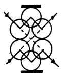

Early computers were designed from the ground up to be truly general
purpose. When you turned them on, you'd be presented with the word
READY, and a blinking cursor. It was an open invitation to PROGRAM
the machine! This is no mere appliance, it's a beckoning gateway to
intellectual discovery!
Strictly speaking, one immortal monkey would be sufficient.
A beauty cold and austere, like that of sculpture, without appeal to any part of our weaker nature, without the gorgeous trappings of painting or music, yet sublimely pure, and capable of a stern perfection such as only the greatest art can show.~


The key in making great and growable systems is much more to design how its modules communicate rather than what their internal properties and behaviors should be.~
Don't fall in love with your technology the way some Forth and Linux advocates have. If it gives you an edge, if it lets you get things done faster, then by all means use it. Use it to build what you've always wanted to build, then fall in love with that.~

Imagine a computer harnessing the natural behavior of natural systems and utilizing their behaviors to solve equations.
Every one knew how laborious the usual method is of attaining to arts and sciences; whereas, by his contrivance, the most ignorant person, at a reasonable charge, and with a little bodily labour, might write books in philosophy, poetry, politics, laws, mathematics, and theology, without the least assistance from genius or study. ~
Color Computer
Non-electronic computers that work when you color them according to a simple set of rules. The booklet contains three series of computers: computers that compare, computers that count, and computers that play. From a technical standpoint they are all NOR-based logic circuits designed by using truth tables, karnaugh maps, and maxterm expansions.
From a social, political, and environmental perspective, these computers are an exploration of computation without electricity and semiconductors, an attempt to reinvent digital systems away from efficiency and productivity, and a hopeful prototype to expose the inner workings of computers.~

Nomograms
A nomogram is a graphical calculating device, a two-dimensional diagram designed to allow the approximate graphical computation of a function. Each variable is marked along a scale, and a line drawn through known scale values (or a straightedge placed across them) will cross the value of the unknown variable on its scale. See also, slide rules.

Visual Multiplication
The stick method of multiplication involves properly placing and crossing sticks. You simply lay out sticks consistent with the place values of the digits being multiplied. Then, you count the places where the sticks cross.
Example: 62 x 21 = 1302

Lattice Multiplication
Lattice multiplication is a method of multiplication that uses a lattice to multiply two multi-digit numbers.
Example: 64 x 17 = 1088

Genaille-Lucas Rods
The right side of the triangle covers the unit digits of a partial product added to a possible carry from the right. The left corner of the triangle is placed in height corresponding to the tens figure of the partial product. Multiplication is done by arranging the rods for the numbers needed, then following the arrows from right to left to read out the result.

Sliding Blocks
One of the intriguing properties of this strange, nondeterministic kind of logic is that signals can flow both forwards and backwards, and in fact don't even need to respect normal notions of input and output.
Consider the AND mini-puzzle. Suppose the goal is to slide the upper protruding block into the box? The answer is that first the left block and the bottom block must both be slid out one unit. This will let the internal blocks slide to free up space for the upper block to slide in. So, this puzzle does indeed have an AND-like property: both the left and the bottom blocks must slide out before the top one may slide in. The light gray blocks are spacers, which don't ever need to move. ~

Paper Microfluidics
Fluidics is the construction of computing systems using fluids. Paper microfluidics don't require external pumps or power sources, they can be small, portable, disposable, easy to distribute and operate, low-cost, technically simple to make, and they only need tiny amounts of sample fluid. A minimal setup can be as simple as heating the lines drawn by wax crayon on extra absorbent paper, like cellulose paper and using droplets with food colouring.

- Nomographie
- Deadreckonings
- Paper Phone
- Paper Camera
- Computer Science Unplugged
- Cut & Fold Templates
- Human-Computers
- Rustic Computing
- Cardtalk Player
- Alligator Calculus
- Sadako
- Sliding Blocks Computers
- Wang Tiles
-0+
A computer with word-sizes that should be measured in trits, not bits. We will use a 3-trit trybble, a 9-trit tryte, and a 27-trit word. Kleene logic augments the conventional true and false of Boolean logic with a third value, unknown.
| Truth value | Unsigned | Balanced | BCB |
|---|---|---|---|
| false | 0 | - | 11 |
| unknown | 1 | 0 | 00 |
| truth | 2 | + | 01 |
Binary-coded Balanced
Binary-coded balanced(BCB) is a representation allowing binary computers to manipulate ternary data. In ternary, one trit encodes 3 values. As such, if we use 2 bits per binary-encoded ternary trit.
| Unsigned | BCB | Balanced | ||
|---|---|---|---|---|
| Dec. | Tern. | Tern. | Dec. | |
| 0 | 00 | 1111 | -- | -4 |
| 1 | 01 | 1100 | -0 | -3 |
| 2 | 02 | 1101 | -+ | -2 |
| 3 | 10 | 0011 | 0- | -1 |
| 4 | 11 | 0000 | 00 | 0 |
| 5 | 12 | 0001 | 0+ | 1 |
| 6 | 20 | 0111 | +- | 2 |
| 7 | 21 | 0100 | +0 | 3 |
| 8 | 22 | 0101 | ++ | 4 |
The advantage of BCB over Douglas W.
Jones's BCT is that it makes detecting carry easier, due to
1+1=2 and 2+0=2 giving the same result, whereas if
you add two values that are 0, 1, and 3 you will never get the same sum two
different ways. To convert to the unsigned form, you can do
(x+1)>>1, and the reverse (x>>1)|x.
| Balanced Trite | |||
|---|---|---|---|
| tri | - | 0 | + |
| bc1 | 11 | 00 | 01 |
| int | -1 | 0 | 1 |
| Balanced Trybble | |||
| try | --- | 000 | +++ |
| bc3 | 111111 | 000000 | 010101 |
| int | -13 | 000 | 13 |

Computation in which many calculations are carried out simultaneously.
A concurrent program needs to perform several possibly unrelated tasks at the same time. In contrast, a parallel program solves a single problem.
By definition, a concurrent program deals continuously with networking protocols, databases, and the like. A typical parallel program is likely to be more focused: it streams data in, crunches it for a while, then streams data back out.
There are many aspects to the parallel execution of a program: threads are created, execute on a processor, transfer data to and from remote processors, and synchronise with other threads. Managing all of these aspects on top of constructing a correct and efficient algorithm is what makes parallel programming so hard.
Events happen in both time and space. It is possible for two events to occur in the same place one after the other in time (ie. sequentially), and equally possible for events to occur in different places at the same time (ie. concurrently, or in parallel).
Divide & Conquer
To solve a large instance of a problem, break it into smaller instances of the same problem, and use the solutions of these to solve the original problem. The branching factor of a divide-and-conquer algorithm is the number of subproblems into which a problem is divided. A divide-and-conquer algorithm is balanced if it divides the initial problem into equally-sized subproblems.
Communicating Sequential Processes
CSP is a process algebra which is used to describe parallel programs. In this world, a program is a network of processes, which are connected using channels. A channel is a point-to-point, uni-directional, synchronous unbuffered comms link. Processes only need to be aware of the channels connecting them to other processes, and how to communicate on those channels (generally using the same protocol as the process on the other end).
Mutex
In its simplest form, a "binary semaphore" is a flag associated with a resource. Two operations act on semaphores: WAIT and SIGNAL. WAIT checks to see if the resource is available. If so, it is marked "unavailable"; if not, the CPU is released to other tasks until the resource becomes available. SIGNAL just marks the resource "available." A true mutex has a more specific use-case and definition, in that only the task that locked the mutex is supposed to unlock it.
Every task, before using a shared resource, does a WAIT on its semaphore, and after using the resource, does a SIGNAL. This is sufficient to ensure that only one task can use that resource at any time -- and yet even if one task is blocked, the other tasks can run normally.
Lock-free
Lock-free data structures are data structures that are thread and interrupt safe without having to use mutual exclusion mechanisms. Lock-free data structures are most useful for inter process communication, but due to the efficiency of lockfree, it can safely be used for single threaded uses as well, making it good for general purpose use.
However it is worthwhile to reflect on the contrast between the concurrent nature of the world, and the sequential nature of the digital computer. Since the main purpose of the computer is to model the world, there would seem to be a serious mismatch.
Multitasking
Round-robin means that each task takes its turn at the CPU, one at a time, in a fixed sequence like a big loop of tasks. Cooperative means that each task has the CPU as long as it wants, and releases the CPU only when it's ready.

- Parallelism and concurrency need different tools
- Concurrent and multicore programming, Haskell
- Forth multitasking in a nutshell
- The Design of Parallel Programming Languages, Richard P. Gabriel
Reversible computing is a model of computation in which time is reversible.
As far as anyone knows, the laws of physics are reversible: that is, you can run them in reverse and recover any earlier state of the universe. This means that from a physical perspective, information can never be destroyed, only shuffled around. A process is said to be physically reversible if it results in no increase in physical entropy; it is isentropic.
Reversible Logic
The first condition for any deterministic device to be reversible is that its input and output be uniquely retrievable from each other. This is called logical reversibility. If, in addition to being logically reversible, a device can actually run backwards then it is called physically reversible and the second law of thermodynamics guarantees that it dissipates no heat.
| CNOT | |||
|---|---|---|---|
| INPUT | OUTPUT | ||
| 0 | 0 | 0 | 0 |
| 0 | 1 | 0 | 1 |
| 1 | 0 | 1 | 1 |
| 1 | 1 | 1 | 0 |
For one input bit, there are two possible reversible gates. One of them is NOT. The other is the identity gate, which maps its input to the output unchanged. For two input bits, the only non-trivial gate is the controlled NOT gate, which XORs the first bit to the second bit and leaves the first bit unchanged.
| INPUT | OUTPUT | ||||
|---|---|---|---|---|---|
| C | I1 | I2 | C | O1 | O2 |
| 0 | 0 | 0 | 0 | 0 | 0 |
| 0 | 0 | 1 | 0 | 0 | 1 |
| 0 | 1 | 0 | 0 | 1 | 0 |
| 0 | 1 | 1 | 0 | 1 | 1 |
| 1 | 0 | 0 | 1 | 0 | 0 |
| 1 | 0 | 1 | 1 | 1 | 0 |
| 1 | 1 | 0 | 1 | 0 | 1 |
| 1 | 1 | 1 | 1 | 1 | 1 |
The Fredkin gate, aka CSWAP gate and conservative logic gate, is reversible and universal, which means that any logical or arithmetic operation can be constructed entirely from it.
In reversible computing, all operations must be reversible, and toggling a bit on or off would lose the information about the initial value of that bit. For this reason, there is no way to deterministically put bits in a specific prescribed state unless one is given access to bits whose original state is known in advance. Such bits, whose values are known a priori, are known as ancilla bits.
The common AND gate is not reversible, because the inputs 00, 01 and 10 are all mapped to the output 0. The original motivation for reversible logic gates was that reversible gates dissipate less heat.
Energy Consumption of Computation
Landauer's principle holds that with any logically irreversible manipulation of information, such as the erasure of a bit or the merging of two computation paths, must be accompanied by a corresponding entropy increase in non-information-bearing degrees of freedom of the observation apparatus.
| Self-Reversible | ||
|---|---|---|
| swp ( a b -- b a ) | ||
| sign ( a -- -a ) | ||
| not ( a -- ~a ) | ||
| cnot ( a b -- c d ) | ||
| Reversible | ||
| rot ( a b c -- b c a ) | -rot ( a b c -- c b a ) | |
| csr ( a b -- a~>b ) | csl ( a -- a<~b ) | |
| Reversible Arithmetic | ||
| add ( a b -- a b+a ) | sub ( a b -- a a-b ) | |
| mad ( a b c -- a+b*c c ) | dam ( a b -- a%b a/b b ) | |
Microprocessors which are reversible at the level of their fundamental logic gates can potentially emit radically less heat than irreversible processors, and someday that may make them more economical than irreversible processors. The Pendulum microprocessor is a logically reversible computer architecture that resembles a mix of PDP-8 and RISC.
The promise of reversible computing is that the amount of heat loss for reversible architectures would be minimal for significantly large numbers of transistors. Rather than creating entropy (and thus heat) through destructive operations, a reversible architecture conserves the energy by performing other operations that preserve the system state.
An erasure of information in a closed system is always accompanied by an increase in energy consumption.
Linear Logic
A linear system excludes combinators that have a duplicative effect, as well as those that a destructive effect. A linear logic computer language avoids the need for garbage collection by explicit construction and destruction of objects. In a reversible machine, garbage collection for recycling storage can always be performed by a reversed sub-computation. The "dangling reference problem" cannot happen in a linear language because the only name occurrence for an object is used to invoke its destructor, and the destructor doesn't return the object.
Most Forth operators take their operands from the top of the stack and return their values to the top of the stack. The language's absence of variable names is characteristic of combinators, the programming of Forth operators can therefore be seen as the construction of larger combinators from smaller ones. A Forth which incorporates only stack permutation operations like swap, rotate, and roll must be linear, because it has no copying or killing operators.~
For an example of reversible cellular automata, see Fractran and Qu-Ants.
•

In 1949, Claude Shannon was characterizing information loss, and needed a term for the degree to which information is scrambled. Visiting mathematical physicist John von Neumann, he received the following advice:
You should call it entropy... nobody knows what entropy really is, so in a debate you will always have the advantage.
- Computers that can run backward
- Software Simulator of Reversible Processor with Stack
- The Aleph Calculus
The dizzying shelves that obliterate the day and on which chaos lies.

We use software because we have goals to achieve and things to do. The software we use is coded by programmers who have their own goals, sometimes these goals overlap with ours, over time these will diverge. The tools we depend on grow features we don't use or understand, introducing bugs that will prevent us from reaching our goals.
We have the choice of trying to understand the code and fix it, we have the choice of trying another program, and we have the choice of coding the software ourselves. All but the last path mean endless seeking, evaluating and further deviation from our goals.
- We implement it according to our own goals.
- We make mistakes and learn from them.
- We learn how the tools we depend on need to work.
- We gain a deep understanding of our problem domain.
- We embrace sharing of ideas and code.
Let's call a program elegant if no smaller program written in the same programming language has the same output.

Jen came in to see what incredible things the engineers and artists had come up with. Everyone was staring at a television set hooked up to a development box for the Sony Playstation. There, on the screen, against a single-color background, was a black triangle. ~
Programming is a form of worldmaking, in which the coder defines how that world operates.~
A virtual machine is a program that acts like a computer.
It simulates the instructions of a processor along with a few other hardware components, allowing it to perform arithmetic, read and write to memory, and interact with I/O devices, just like a physical computer. Most importantly, it can understand a machine language which you can use to program it.
Virtual machines provide an intermediate language stage for compilation. They bridge the gap between the high level of a programming language and the low level of a real machine. The instructions of an abstract machine are tailored to the particular operations required to implement operations of a specific source language or class of source languages.

A bedrock abstraction level is found in every human system. No recoverable failure, no matter how catastrophic, will ever demand intelligent intervention below it. When an application crashes, it might leave behind a core dump but never a "logic gate dump" and certainly not a "transistor dump." Logic gates and transistors lie well below the bedrock abstraction level of any ordinary computer. ~
To experiment with computing from first principles, have a look at the paper computer.